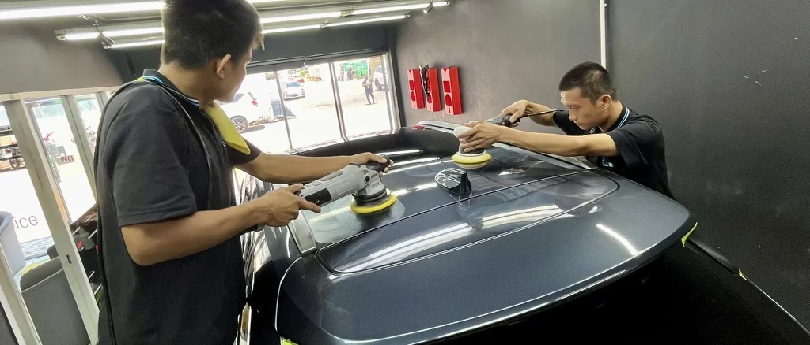
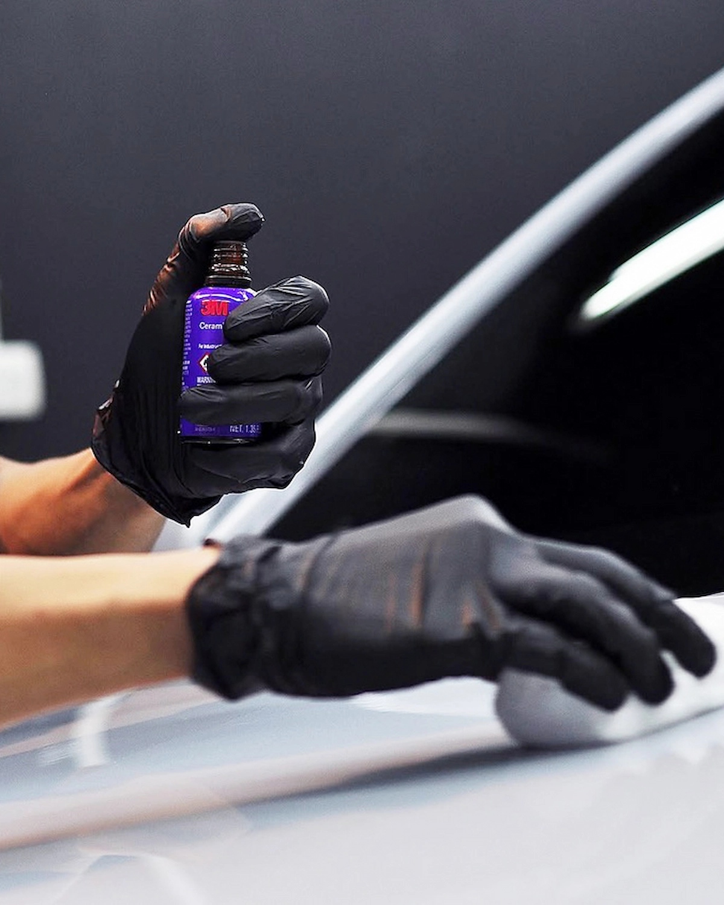

IR05
เหมาะกับผู้ที่ต้องการโทนเข้มชัดเจน ลดแสงจ้าได้มาก และชอบภาพรวมรถที่ดูนิ่งขึ้น
POSITIONING
3M Ceramic Ultra Clear ถูกออกแบบมาเพื่อให้ได้สมดุลระหว่างความใส ความสบายตา และการลดความร้อน โดยไม่จำเป็นต้องไปสุดทางด้านความเข้มหรือราคาสูงสุด
สำหรับคนส่วนใหญ่ที่ใช้รถทุกวัน รุ่นนี้คือจุดลงตัวที่ตัดสินใจง่าย เพราะให้ความรู้สึกสบายขึ้นจริงในห้องโดยสาร ขณะเดียวกันภาพรวมรถยังดูสะอาด มองออกง่าย และเข้ากับรถสมัยใหม่ได้ดี

CORE TECHNOLOGY
ฟิล์มกลุ่ม Ceramic ถูกพัฒนาด้วยแนวคิดที่เน้นการจัดการพลังงานความร้อนจากอินฟราเรด เพื่อเพิ่มความสบายภายในรถ โดยยังคงบุคลิกของฟิล์มโทนใสไว้ได้ดี
โครงสร้างแบบไม่ใช้โลหะช่วยให้เหมาะกับรถรุ่นใหม่ รวมถึงรถที่มีระบบอิเล็กทรอนิกส์จำนวนมาก เช่น GPS, Easy Pass, กล้อง, เซนเซอร์ และอุปกรณ์สื่อสารต่าง ๆ
รุ่นนี้ไม่ได้ถูกวางให้เป็น “ตัวเข้มสุด” หรือ “ตัวแพงสุด” แต่เป็นรุ่นที่ให้สมดุลดีที่สุดสำหรับคนส่วนใหญ่ที่ต้องการใช้งานสบายทุกวัน
WHY PEOPLE CHOOSE IT
คนจำนวนมากไม่ได้ต้องการฟิล์มที่เข้มจัดหรือสุดทางในทุกมิติ แต่ต้องการฟิล์มที่ติดแล้วใช้งานได้ดีจริงในทุกวัน ขับกลางวันสบาย มองออกง่าย และดูเข้ากับรถโดยไม่ทำให้ภาพรวมหนักเกินไป
Ceramic Ultra Clear จึงเหมาะกับผู้ที่ต้องการความสบายแบบชัดเจน แต่ยังอยากรักษาความรู้สึกโปร่ง สะอาด และใช้งานง่ายของห้องโดยสารไว้
AVAILABLE SHADES
| รุ่น | ความเข้าใจแบบใช้งานจริง | VLT | Glare Reduction |
|---|---|---|---|
| IR05 | เข้มประมาณ 80% | 5% | 93% |
| IR15 | เข้มประมาณ 60% | 16% | 78% |
| IR25 | เข้มประมาณ 50% | 25% | 65% |
VLT คือค่าการส่งผ่านแสงที่วัดตามมาตรฐานจริง ยิ่งตัวเลขต่ำ ฟิล์มยิ่งเข้มมากขึ้น
PERFORMANCE
| คุณสมบัติ | IR05 | IR15 | IR25 |
|---|---|---|---|
| Total Solar Energy Rejected (TSER) | 66% | 63% | 61% |
| Infrared Rejection (IRR) | 95% | 90% | 90% |
| IR Energy Rejection (IRER) | 67% | 67% | 67% |
| UV Rejection | 99.9% | 99.9% | 99.9% |
| Visible Light Transmission (VLT) | 5% | 16% | 25% |
ตัวเลขชุดนี้เหมาะสำหรับใช้เปรียบเทียบแนวโน้มของแต่ละเฉด โดยประสบการณ์จริงยังขึ้นกับกระจกรถเดิมและการใช้งานของแต่ละคันด้วย
UNDERSTANDING THE METRICS
ค่าพลังงานแสงอาทิตย์รวมที่ถูกปฏิเสธ ยิ่งสูงยิ่งช่วยลดภาระความร้อนที่เข้าสู่ห้องโดยสาร
ใช้ดูความสามารถในการจัดการพลังงานความร้อนในช่วงอินฟราเรด ซึ่งสัมพันธ์กับความรู้สึกร้อนจากแดดที่กระทบตัว
ค่าการส่งผ่านแสงที่ช่วยให้เราเข้าใจระดับความเข้มจริงของฟิล์ม และควรใช้พิจารณาร่วมกับการมองเห็นตอนกลางคืน
ช่วยลดรังสี UV และลดผลกระทบต่อวัสดุภายในรถในระยะยาว
VISUAL / DAILY USE
เหมาะกับผู้ที่ต้องการโทนเข้มชัดเจน ลดแสงจ้าได้มาก และชอบภาพรวมรถที่ดูนิ่งขึ้น

เป็นจุดสมดุลที่หลายคนเลือก เพราะยังได้ความเข้มพอเหมาะ และใช้งานได้ง่ายในชีวิตประจำวัน

เหมาะกับผู้ที่ต้องการความโปร่งขึ้น มองออกสบาย และยังได้แนวคิดของฟิล์มเซรามิกที่เน้น comfort
REAL-WORLD EXPERIENCE
ช่วยให้การมองเห็นในช่วงกลางวันรู้สึกสบายขึ้น โดยไม่ต้องทำให้ภาพมืดหรือทึบเกินไป
เป็นรุ่นที่เหมาะกับรถบ้าน รถครอบครัว รถใช้งานประจำวัน และผู้ที่ต้องการตัดสินใจแบบสมดุล
ด้วยโครงสร้าง metal-free จึงเป็นรุ่นที่เข้ากับรถยุคใหม่ได้ดีทั้งในเชิงเทคโนโลยีและการใช้งาน
INSTALLATION QUALITY
ผลลัพธ์ของฟิล์มไม่ได้ขึ้นอยู่กับวัสดุเพียงอย่างเดียว แต่ขึ้นอยู่กับการเตรียมพื้นผิว ความสะอาดในขั้นตอนติดตั้ง และรายละเอียดของงานหลังเสร็จด้วย
เราจึงให้ความสำคัญกับทั้งการเลือกเฉดที่เหมาะกับรถ และคุณภาพของงานติดตั้ง เพื่อให้ผลลัพธ์เหมาะกับการใช้งานจริงระยะยาว

RELATED SHADES
หากคุณต้องการลงลึกในแต่ละระดับความเข้ม สามารถดูหน้ารายละเอียดของแต่ละเฉดได้ต่อจากด้านล่าง
CONSULTATION
แจ้งรุ่นรถ พื้นที่ใช้งาน และโทนความเข้มที่คุณชอบ เราจะช่วยแนะนำเฉดที่เหมาะกับรถและการใช้งานของคุณก่อนตัดสินใจ
ปรึกษา / นัดหมายติดตั้ง